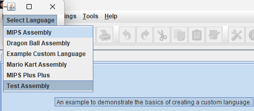

MARS LE
An extension to the MARS program allowing you to define your own custom assembly languages
TestAssembly.java
package mars.mips.instructions.customlangs;
import mars.simulator.*;
import mars.mips.hardware.*;
import mars.*;
import mars.util.*;
import mars.mips.instructions.*;
These are the necessary imports to create a CustomAssembly within the CustomizableMARS/mars/mips/instructions/customlangs folder. Next, we must override the methods of the CustomAssembly abstract class:
public class TestAssembly extends CustomAssembly{
@Override
public String getName(){
return "Test Assembly";
}
@Override
public String getDescription(){
return "An example to demonstrate the basics of creating a custom language.";
}
Now, we are only missing the most important function call: populate(). Let's use populate() to create a simple instruction to add two registers and store the result into a third register!
@Override
protected void populate(){
instructionList.add(
new BasicInstruction("add $t1,$t2,$t3",
"This is the description of my add instruction!",
BasicInstructionFormat.R_FORMAT,
"000000 sssss ttttt fffff 00000 100000",
new SimulationCode(){
public void simulate(ProgramStatement statement) throws ProcessingException{
int[] operands = statement.getOperands();
int add1 = RegisterFile.getValue(operands[1]);
int add2 = RegisterFile.getValue(operands[2]);
int sum = add1 + add2;
RegisterFile.updateRegister(operands[0], sum);
}
})
);
}
Now that our .java file has been created inside the correct folder, there's only one step left before we can use our custom language. On Windows, navigate back to the root directory of CustomizableMARS and run "BuildCustomLangJar.bat" using the name of our custom language file:
Now, if we boot up MARS, we can see our custom language, select it, and use its instructions!
